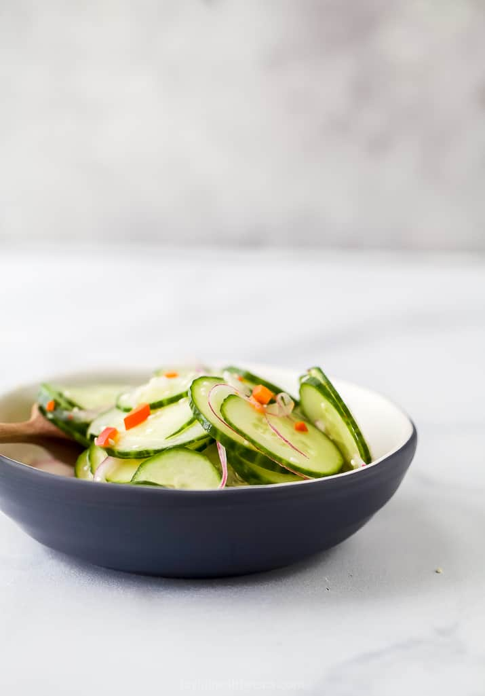

Cucumber Salad

Cucumber Salad
This is a delicious and healthy vegetable side dish. This recipe is
very easy to make and takes very little time to prepare.
Ingredients
- 2 English Cucumbers
- 1/2 Red Onion
- 1/2 Whole Carrot
- 1/3 Red Bell Pepper
- 1/4 Teaspoon Sea Salt
- 1 Teaspoon Sesame Seeds
- 1/4 Cup Rice Wine Vinegar
- 1/2 Teaspoon Toasted Sesame Oil
- 1 Teaspoon Honey
- 1/4 Teaspoon Red Pepper Flakes *Optional*
Steps
- Wash, dry, and skin the cucumbers. Next, slice the cucumber into 1/4
inch sections and then cut each section into fours.
- Wash and dry the red onion and remove the outer layer of the onion.
Cut the onion in half and put one half away for use in another meal.
Then, dice the onion half and set it aside.
- Wash and dry the bell pepper. Cut the bell pepper in thirds and put
two-thirds away for use in another meal. Then, dice the bell
pepper third and set it aside.
- Wash the carrot, cut off the ends, and peel the outer layer. Next,
peel small sections off the carrot until there is about 1/8 cup of
carrots peels.
- In a small bowl, make the dressing by mixing together the rice wine
vinegar, honey, toasted sesame oil, red pepper flakes, and sea salt
.
- Add the diced cucumbers, diced red onion, diced red bell pepper,
carrot peels, and the dressing to a big bowl. Toss to mix everything.
- Serve immediately or cover and let the dish sit in the refrigerator
for an hour or two to let all the flavors meld.